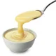
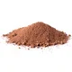
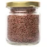

Brigadeiro de Panela
Ninguém resiste a essa receita de brigadeiro: ele é o rei das festas de aniversário e é impossível comer um só. Seja pra comemorar ou afogar as, mágoas no com uma panela de brigadeiro assistindo um filme triste, essa receita faz parte do dia a dia do brasileiro há décadas. Muito tradicional em nosso país, o brigadeiro é muito fácil de preparar: leva apenas leite condensado, margarina, achocolatado em pó e chocolate granulado. Além de comer as bolinhas nas festas de aniversário, ele é um doce versátil que você pode consumir de diversas maneiras: como cobertura de bolo, recheio, com colher, em copinhos ou até mesmo misturando com biscoitos e fazendo palhas italianas. Veja agora mesmo como fazer brigadeiro de forma simples e prática! Você quer outras receitas de doces para festa de aniversário? Saiba como fazer beijinho, cajuzinho, olho-de-sogra, casadinho e muito mais aqui no TudoGostoso! Confira!
Ingredientes (30 porções):
-

1 lata de leite condensado -
 1 colher de margarina
1 colher de margarina
-

3 colheres de achocolatado em pó -

Chocolate granulado para enrolar
Modo de preparo
1. Misture os Ingredientes
Em uma panela funda, acrescente o leite condensado, a margarina e o chocolate em pó.
2. Observe o ponto
Cozinhe em fogo médio e mexa até que o brigadeiro comece a desgrudar da panela.
3. Faça o brigadeiro
Deixe esfriar e faça pequenas bolas com a mão passando a massa no chocolate granulado.